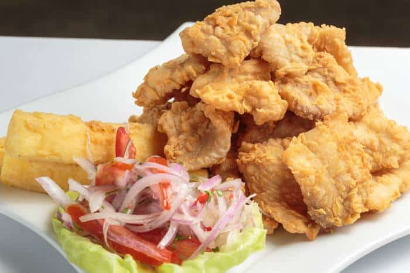

Bimvenidos a nuestro stio web dedicado a la gastronimia perúana
nuevas recetas
Chicharrón de pescado
Tiempó de preparacíon : 25 Minutos Personas 4
Ingredientes
- Merluza (Puede ser congelada) - 500 g
- Maicena o harina de maíz - 250 g
- Ajo en polvo -2 chucharaditas
- Huevos - 2 unidades
- Romero seco ½
- Sal -al-gusto
- Pimienta - ¼
- Zumo de limon (el limon)
- Aceite de oliva sabor suave -80 ml
Prerparaccion
- El chicharrón se puede hacer con otros pescados como el lenguado o el bacalao, si lo compras congelado, es conveniente lo dejes en la nevera la noche anterior. Así estará descongelado para la receta. Seca bien el pescado con un paño o papel de cocina. Cortar el pescado en trocitos del tamaño de un bocado
- El chicharrón se puede hacer con otros pescados como el lenguado o el bacalao, si lo compras congelado, es conveniente lo dejes en la nevera la noche anterior. Así estará descongelado para la receta. Seca bien el pescado con un paño o papel de cocina. Cortar el pescado en trocitos del tamaño de un bocado
- Prepara dos platos, uno con los dos huevos batidos, otro con papel de de cocina. Prepara una sartén con aceite a fuego flojo, mientras el pescado que tenemos rebozado lo pasamos por el huevo batido. Escurre y a la sartén. Sube el fuego a media temperatura. Cocina el pescado hasta que quede dorado. Dejar que repose en el plato con papel de cocina.
- Servir acompañado de limón o mayonesa.